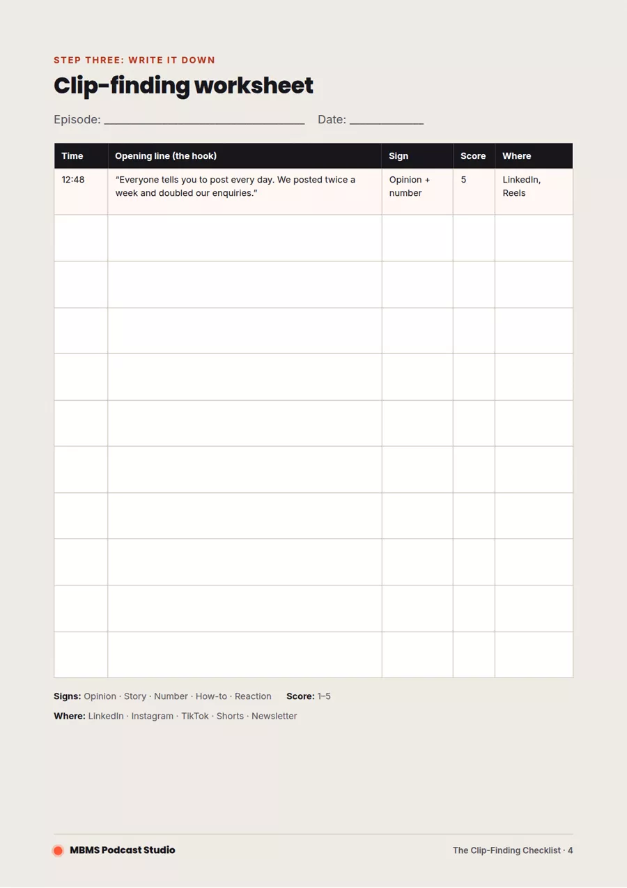

How to find the best clips in any podcast episode
Most podcast episodes hold five to ten moments that could stop someone mid-scroll. Most of them never get posted, because finding them feels like it means watching the whole thing again.
It doesn’t. With a transcript and a clear idea of what you’re looking for, you can find your best clips in about 20 minutes. We’ve put our process into a free, printable checklist you can use on every episode, video or webinar.

The Clip‑Finding Checklist
Five pages: the five signs of a good clip, the 20-minute process, a printable worksheet and a pre-post checklist. Free, no sign-up needed.
Download the free checklist (PDF)The five signs of a good clip
A clip works when it makes sense on its own, in the first few seconds, to someone who has never heard of you. These are the moments that do that:
- A strong opinionSomeone says what they really think, especially if it goes against the usual advice. Listen for “Honestly…” or “Everyone says X, but…”.
- A story with an endingA short, complete story: a problem, what happened and how it turned out. Under a minute is ideal.
- A surprising number or factA figure or result that makes people think “really?”. Before-and-after results work especially well.
- A practical how-toA tip someone could use today. Clear steps, no jargon, easy to save and share.
- A real reactionA laugh, a pause, a moment of emotion. People share feelings more than facts.
Find your clips in 20 minutes
You don’t need to rewatch the episode. Work from the transcript, then check your favourites by ear:
- Get a transcript. Riverside, Descript, YouTube and most editing tools create one automatically.
- Skim and highlight. Mark any line that matches one of the five signs. Aim for 15 to 20 highlights and don’t judge yet.
- Note the timestamps and opening line of each highlight.
- Run the three-second test. Read only the first sentence. Would a stranger keep watching? If not, find a stronger start or drop it.
- Score them from 1 to 5 and keep anything that scores 4 or 5.
- Listen to your top picks to check they make sense on their own and the audio is clean.

Before you post
A great moment can still fall flat if it’s posted badly. Check every clip against these basics:
- The first three seconds hook the viewer
- It makes sense without any context
- Captions are on, because most people watch with the sound off
- It’s 30 to 60 seconds, in the right shape for the platform
- The post text adds context and says where to hear the full episode
The full pre-post checklist, with format notes for LinkedIn, Instagram Reels, TikTok and YouTube Shorts, is in the PDF.
Download the free checklist (PDF)
Clips are just the start
Finding clips is one part of a bigger method: turning every episode into a month of marketing, with clips, LinkedIn posts, an article and a newsletter all coming from the same conversation.
Questions about podcast clips
How long should a podcast clip be?
For most platforms, 30 to 60 seconds works best, and shorter is usually better. LinkedIn can take up to around 90 seconds if the clip holds attention, but the first three seconds matter most everywhere.
How many clips should I get from one episode?
Most episodes have five to ten moments worth sharing. Aim for at least five, which is enough to post a clip or two a week for a month alongside the full episode.
What's the fastest way to find clips?
Work from a transcript rather than rewatching the episode. Skim it, highlight lines that match the five signs of a good clip, test each opening line, then listen back to your top picks. It takes about 20 minutes.
Rather we found the clips for you?
We record, edit and cut clips for businesses in Marlow, London and on location, and plan the marketing around every episode. If you already have a YouTube podcast, we can turn your existing episodes into clips too.
Your episode brings the ideas. We handle the rest.